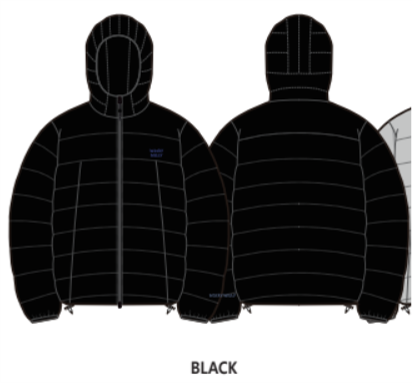
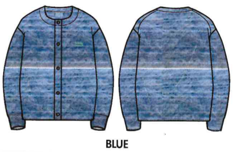
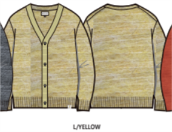
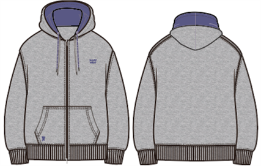
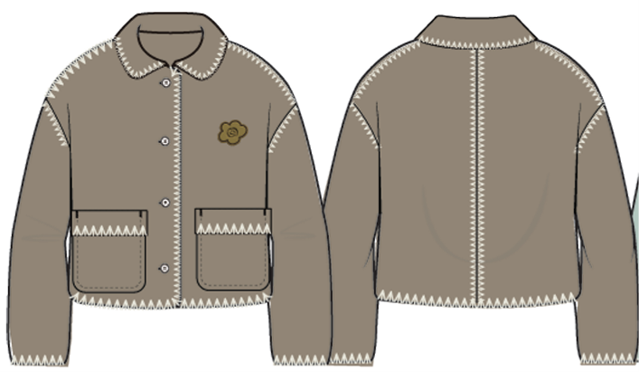
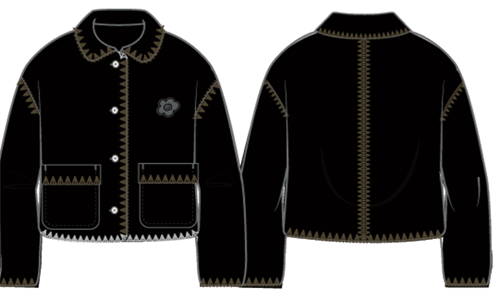
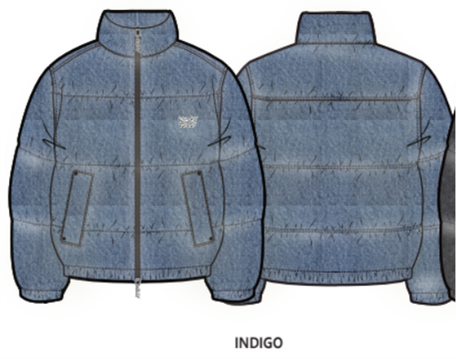
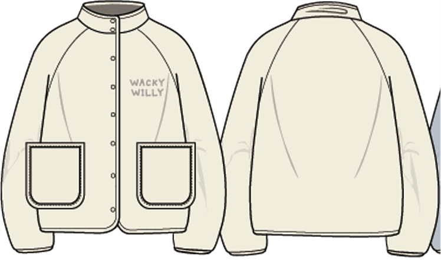
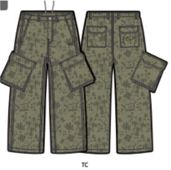
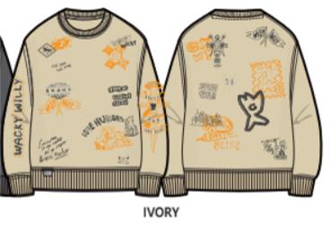

08
PRE-FALL SIGNAL카라 스트라이프가디건그래픽 모자
가을이 시작되는 신호를 만든다. “얇게 바꾸는 첫 FW 룩”으로 카라/스트라이프/가디건을 전면에 둔다.
콘텐츠: 등교·데일리 외출 3룩, 카라 디테일 클로즈업, ACC 같이 들기.
이상하게 귀엽고, 확실히 따뜻한 겨울. 26FW는 상품별 출시표가 아니라 프리폴 진입부터 연말 기프트까지 이어지는 하나의 고객 여정으로 재편한다.

HERO OUTER
COZY FLEECE
PRE-FALL KNIT현재 파일은 상품 묶음과 물량은 충분하지만, 소비자가 기억할 시즌 문장과 월별 행동 설계가 약하다. IMC의 목적을 “상품 노출”에서 “구매 이유 축적”으로 바꿔야 한다.
상품 출시 월을 그대로 보여주지 말고, 소비자가 느끼는 계절 변화와 구매 명분을 순서대로 설계한다.
가을이 시작되는 신호를 만든다. “얇게 바꾸는 첫 FW 룩”으로 카라/스트라이프/가디건을 전면에 둔다.
콘텐츠: 등교·데일리 외출 3룩, 카라 디테일 클로즈업, ACC 같이 들기.
상하의 조합이 가능한 셋업을 “고민 없이 귀여운 한 벌”로 제안한다.
콘텐츠: 상하의 믹스매치, 소재 터치감, 컬러별 친구 착장.

FW 피크 전 소재감을 각인한다. 보온성보다 먼저 “만지고 싶은 포근함”을 보여준다.
콘텐츠: 플리스 질감 매크로, 레이어링 전후, 더키 그래픽 숏폼.
고단가 아우터는 “올겨울 대표 착장”으로 집중한다. 룩북보다 착용 장면을 많이 만든다.
콘텐츠: 출근/등교/주말 3상황, 보온 디테일, ACC 선물 연결.

비어 있는 12월을 선물 캠페인으로 채운다. 대형 아우터보다 소액 구매와 컬러 포인트가 핵심이다.
콘텐츠: 5만원대/10만원대 선물, 레드 포인트 룩, 커플·친구 선물 컷.

모든 상품을 같은 방식으로 노출하면 IMC가 약해진다. 각 품번의 역할을 먼저 나누고 콘텐츠·예산·리오더 기준을 다르게 둔다.

시즌 비주얼과 매출을 끌고 가는 대표 상품. 코듀로이 다운, 테디 플리스, 더플코트.

착장 완성도를 만드는 상품. 카라 니트, 가디건, 셋업, 뉴베이직 스웻.

구매 장벽을 낮추는 전환 상품. 백, 모자, 슈즈, 머플러, 소액 ACC.

와키윌리다움을 기억시키는 상품. 더키, 릴리 퀼팅, 그래픽, 레드 포인트.
이번 파일에서 바로 보완해야 할 것은 상품 추가보다 운영 설계다. 아래 항목이 채워져야 실행 가능한 IMC가 된다.
IMC 파일에 아래 한 줄 체크표가 붙어야 상품 기획, 마케팅, 영업이 같은 기준으로 움직일 수 있다.